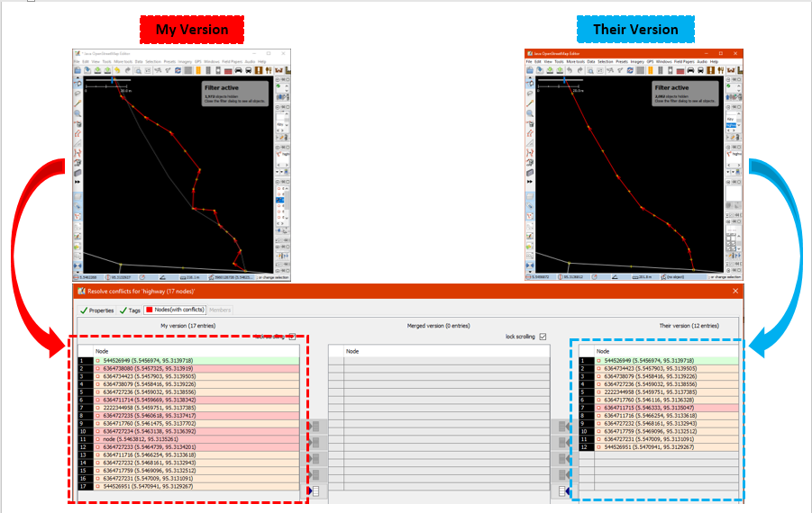
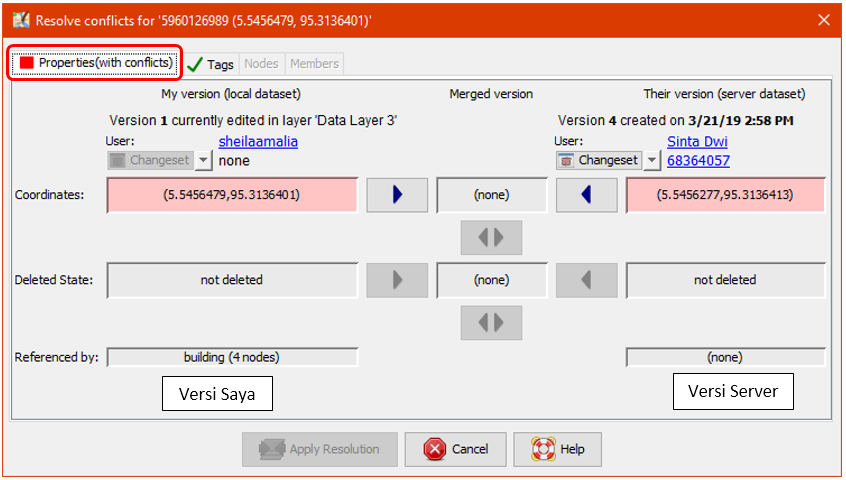
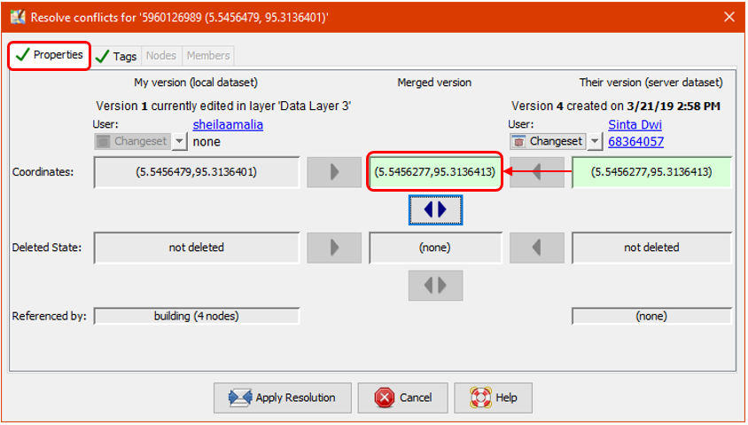
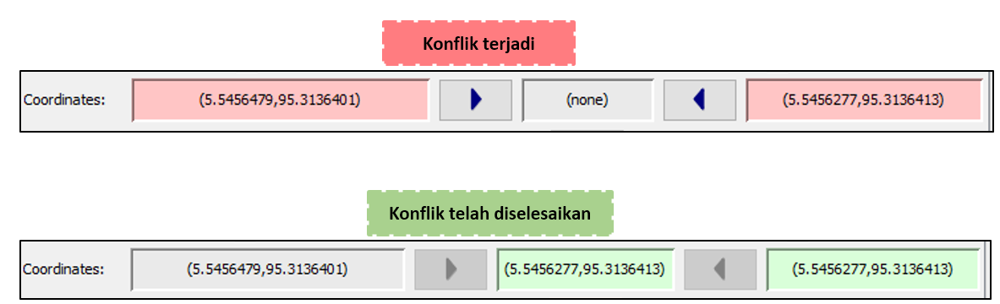
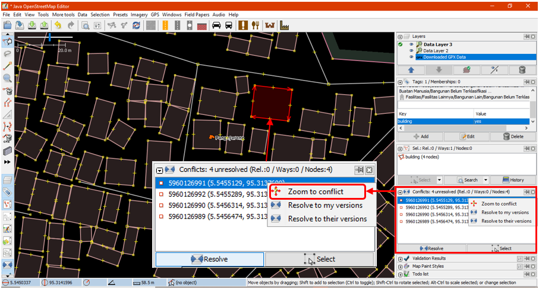
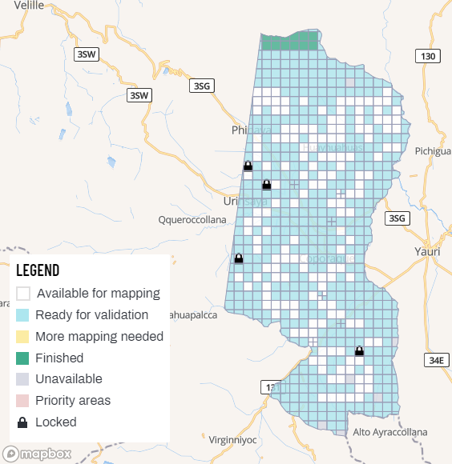

2.6 Résolution des conflits dans JOSM
Cette section contient:
- Un aperçu de conflit de données dans OpenStreetMap
- Etape-par-étape de résolution de conflit dans JOSM
- Guide de prévention et de gestion de conflit de données
The following materials are designed to assist project managers and others leading trainings and workshops. However, this material is also suitable for individuals interested in learning how to validate OSM data in JOSM.
Aperçu
Quand vous chargez vos données dans JOSM, d’autre contributeurs peuvent être entrain d’éditer dans votre zone. Dans d’autres situations, différentes données aurait pu être collecté pour les même entités. Ceci peut causer des conflits de données lors du chargement. Il est donc important pour le contributeur d’avoir des notions de conflit de données dans OpenStreetMap, les types de conflits et comment les résoudre dans JOSM.
Ressources et matériels de formation
Cette section rassemble une sélection de ressources destiné au chefs de projet, formateur ou des autodidactes sur les sujet mentionné dessus.
La section suivante est conçu pour servir de matériel auto-rythmé qui peut être utilisé lors des formations et et par des autodidactes.
Résolution des conflits dans JOSM
Objectifs:
- Les participants peuvent expliquer ce que c’est le conflit de données dans OpenStreetMap
- Les participants connaissent les différents types de conflits dans JOSM
- Les participants peuvent coriger les conflits de données dans JOSM
- Les participants savent eviter le conflit des données dans JOSM
1. Conflit de données dans OpenStreetMap
Aprés édition de vos données et importation dans JOSM il vous est peut-être déjà arrivé de recevoir ce genre de message:

L’image dessus présente un conflit de données dans JOSM. Que peut-il être le problème? Ce conflit surgit car lorsque vous éditez vos données dans JOSM, vous le faite en même temps que les autres contributeurs. Donc l’autre contributeur charge ses données en premier et reçois une confirmation du serveur OSM. Par la suite, vous essayez aussi de charger les mêmes données avec vos modifications. Dans ce cas, vos données seront automatiquement rejeté par le serveur à cause du conflit.
Vous ferez face au conflits de données dans JSOM lors des éditions, ajout, suppression de certains objets dans OpenStreetMap, en même temps que d’autres contributeurs. Les autres contributeurs ont chargé leurs modifications légèrement avant vous. Dans ce cas, quand vous essayez de charger vos modifications, il y’a confusion au niveau du serveur car il ne sait quelle modification est correcte à sauvegarder. Quand cela se produit, alors le conflit de données doit être résolu avant de pouvoir continuer à charger les données dans le serveur OSM.

L’image dessus est un exemple de conflit qui pourrait surgir due à un positionnement différent d’objet entre votre version (ma version) et celle d’autres contributeurs (leurs version) reçu par le serveur. Pour résoudre ce conflit, il vous faut choisir une version parmis (voir la section 3. Résolution des conflits de données dans JOSM).
2. Types de conflits de données dans JOSM
2.1 Conflit de Properties
Le conflit des propriétés survient quand un objet(s) à été déplacé, supprimé de tel façon qu’un ou plusieurs de ses noeuds ont différentes location/position que la version précédente.

L’image dessus est un exemple de conflit de propriétés dans JOSM. Comme ont peut le voir dans l’image, dans ma version, l’objet est de forme carré et dans l’autre version (leurs version) un des noeuds est supprimé ce qui change la forme en triangle. Pour corriger cela, il vous faut choisir la version correct basé sur la localisation des différents noeuds dans différentes versions.
2.2 Conflit d’attribut
Le conflit d’attribut survient car il y’a différentes informations (attributs) sur l’objet édité par deux ou plusieurs contributeurs. Les information ont pu être supprimé ou changé dans la version précédente.

L’image dessus montre la différence entre deux versions du même objet dans JOSM. Version à un attribut Rumah Sakit tag (amenity = hospital) avec pour nom Rumah Sakit Tebet Raya tant dit que l’autre version (leurs version) possède l’attribut klinik (aminity = clinic) avec nom RS Tebet Timur. Vous devez choisir la version qui vous contient l’information correcte avant de charger dans le serveur.
2.3 Conflit de noeud
Ce conflit survient lorsqu’il y’a des differences dans l’ordre des noeuds d’une voie ou objet(s) à contour fermé qui à été supprimé ou déplacé dans une version et charger dans le serveur OSM.

3. Résolution de conflit de données dans JOSM
La correction de conflit de données dans JOSM est simple, même si la plupart des contributeurs auront des confusions dans cet exercice. Généralement, chaque résolution de conflit dans JOSM vous demande de choisir entre votre version et la version préalablement chargé dans le serveur (leurs version). Vous devez choisir si vous entre garder votre version ou la supprimer et utiliser leurs version. Les étapes de résolution de conflit dans JOSM sont les suivantes:
- Lorsque la fenêtre de conflit apparaît, il est possible que vous ne souhaitiez sélectionner que l’option Synchroniser le nœud 5,960,126 uniquement. Cependant, cette option ne résoudra les conflits que dans un seul nœud. Au lieu de cela, vous devez sélectionner l’option Synchroniser l’ensemble des données pour pouvoir résoudre tous les nœuds de conflit en une seule fois.

- Après cela, JOSM montrera combien de conflits ont été détectés, cliquez sur OK.

- Il y a une liste de conflits dans le panneau Conflit en bas à droite de votre JOSM. Vous pouvez choisir le conflit que vous voulez résoudre et cliquer sur Resolve.

- Lorsque vous avez cliqué sur le bouton Résoudre, la fenêtre apparaît et affiche les détails du conflit détecté. Le message sur le conflit peut sembler compliqué, mais il contient en fait des instructions simples. Vous saurez quel type de conflit vous avez en regardant le symbole. Par conséquent, le conflit dans cet exemple a été causé par l’emplacement des coordonnées et la position différente de l’objet. Vous pouvez consulter la liste des coordonnées modifiées ou déplacées comme le montre l’image ci-dessous. Ainsi, le conflit dans cet exemple a été causé par un nœud modifié.

- Vous ne pouvez résoudre qu’un seul conflit à la fois. Vous pouvez choisir la version correcte entre votre version ou leurs versions sur le serveur. Si vous êtes sûr que votre version est la bonne (vous éditez / ajoutez l’objet en fonction de votre cartographie de terrain ou si vous connaissez déjà l’objet personnellement), alors choisissez ma version (ensemble de données local). Cependant, si vous n’êtes pas sûr de votre version et pensez que l’autre version est plus convaincante alors vous pouvez choisir Leurs versions (jeu de données serveur). Cliquez sur la flèche bleue
 dans la version que vous choisissez. Si le conflit a été résolu, le symbole devient vert
dans la version que vous choisissez. Si le conflit a été résolu, le symbole devient vert

- Après avoir sélectionné la bonne version, vous devez vous assurer que la couleur de la zone de conflit est passée du rose au vert. Cela signifie que vous avez résolu le conflit avec succès.

- Cliquez ensuite sur Appliquer la résolution comme indiqué dans l’image ci-dessus. Une fois que vous avez terminé votre conflit, vous pouvez commencer à télécharger vos modifications OSM.

- Dans le menu Fenêtre, vous pouvez activer la fenêtre Conflits. Cette fenêtre affiche le nombre total de conflits sur toutes vos données lorsque vous cliquez sur le bouton Résoudre. Vous pouvez également utiliser une autre méthode en cliquant avec le bouton droit de la souris sur l’un des conflits et choisir Résoudre à mes versions ou Résoudre à leurs versions. Pour trouver l’objet, vous pouvez cliquer avec le bouton droit de la souris et cliquer sur Zoom sur le conflit. Ceci sera très utile si vous avez beaucoup de conflits et que vous avez besoin de les vérifier et de les résoudre un par un.

Note : Vous ne pouvez pas charger vos modifications tant que vous n’avez pas résolu tous vos conflits et que la liste des conflits dans la fenêtre des conflits n’est pas vide. Gardez à l’esprit que vous devez être prudent lorsque vous résolvez le conflit et que vous devez le vérifier un par un pour vous assurer que tout est correct comme il se doit.
4. Éviter les conflits de données dans JOSM
Vous pouvez faire certaines choses pour éviter les conflits lors du chargement de vos données sur le serveur OSM, comme suit:
-
Charger vos modifications en continu
Pour minimiser les conflits, vous pouvez charger vos modifications en continu. Par exemple, si vous avez cartographié 100 bâtiments mais que vous ne disposez pas d’une bonne connexion Internet, vous devriez charger vos modifications pour chaque 20 bâtiments ou toutes les 15 minutes. La raison en est que le conflit aurait plus de chances de se produire si vous téléchargez quand il est terminé. Plus vous attendez pour télécharger, plus il est possible que les données aient été éditées et téléchargées sur le serveur par d’autres contributeurs. Par conséquent, la probabilité de conflit pour votre édition augmentera.
Si vous voulez sauvegarder vos données OSM et les charger plus tard, vous pouvez mettre à jour vos données OSM avant de les charger. Ceci devrait être fait de façon à ce que vous puissiez obtenir les dernières données OSM du serveur avant de les charger. Vous pouvez le faire en cliquant sur File → Update data ou Update Modified puis attendre que le processus de mise à jour soit terminé. Après cela, vous pouvez charger vos modifications à l’aide des options dans le menu Fichier ou en cliquant simplement sur la barre de menu
 icon on menu bar.
icon on menu bar.
-
Modifier uniquement dans la zone de téléchargement
Vous pouvez faire de la cartographie dans une zone spécifique pour minimiser les risques de conflit en évitant d’éditer des objets en dehors de votre zone de téléchargement dans JOSM. Ceci peut empêcher deux utilisateurs ou plus de modifier dans la même zone. Notez que les lignes diagonales autour de votre zone de téléchargement est une zone que vous devez éviter de modifier dans JOSM.

Après avoir téléchargé les données, votre zone d’édition est la seule zone à l’intérieur de laquelle il n’y a pas de lignes diagonales. La zone à l’extérieur de votre zone d’édition est très probablement en cours d’édition ou a été éditée par d’autres contributeurs. Évitez d’éditer dans la zone réduira le risque de conflit dans vos données.
-
Utiliser le Tasking Manager
Si vous souhaitez effectuer une cartographie collaborative, vous pouvez utiliser le Tasking Manager. Il vous aidera à diviser votre zone cartographique en grilles de tâches. Ainsi, vous pouvez choisir facilement votre grille de zone cartographique sans vous soucier d’obtenir la même zone avec d’autres contributeurs d’OSM car une fois que vous sélectionnez une certaine grille, elle sera verrouillée et ne pourra être choisie par d’autres contributeurs.
N’importe quel volontaire de cartographie de la région peut choisir une grille qu’il veut et après l’avoir terminée, il peut marquer la grille comme ayant été cartographiée. Cela permettra à beaucoup de gens de cartographier des zones en même temps sans s’inquiéter d’un conflit.

Résumé
Si vous avez suivi et terminé de pratiquer toutes les étapes de ce chapitre, vous avez réussi à comprendre le conflit de données dans JOSM et comment le résoudre. De plus, vous avez aussi appris à connaître les types de conflits et comment les éviter dans JOSM. Félicitations!